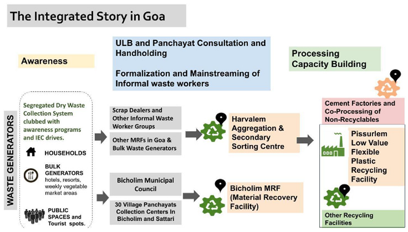

As one of the smallest territories in the country, Goa offers us a
perfect environment for our circularity project, where we could design
a comprehensive, holistic, and multi-stakeholder program, covering all
the steps required for setting up inclusive waste management. Our
attempts to achieve zero-landfilling in Bicholim and Sattari Taluka
have been recognized by NITI Aayog as the best waste management
practices in their 2021 report. Concurrently, our alignment with the
State Government, the Pollution Control Board (GPCB), and GWMC (Goa
Waste Management Corporation) has helped us immensely to initiate our
program in Goa, where we are running sustainable projects and are
upscaling the model into other states (mainly in Maharashtra and
Gujarat), hoping to establish a model to be followed by others in the
industry.
With three verticals of (a) Awareness and IEC, (b) ULB and Panchayat Consultation and Hand Holding along with Formalisation and Mainstreaming of Informal Waste Workers, and (c) Setting up and Running Waste Recovery facilities (at different levels of the supply chain including primary segregation, secondary sorting, and recycling) by developing and in association
With three verticals of (a) Awareness and IEC, (b) ULB and Panchayat Consultation and Hand Holding along with Formalisation and Mainstreaming of Informal Waste Workers, and (c) Setting up and Running Waste Recovery facilities (at different levels of the supply chain including primary segregation, secondary sorting, and recycling) by developing and in association

Activities Performed:
-
Awareness and IEC :
In and around Bicholim and Sattari taluka in Goa, we have done a consistent IEC program for 4 years, engaging with 30 Panchayats and main ULBs to ensure better segregation at source. In close coordination with GWMC and village panchayats, we have been able to organize about 100 workers in these villages for the regular collection of dry waste. Linking the collection attempts at these villages with a simple database of QR codes across 50,000+ households and commercial shops and units to keep track of source segregation levels has resulted in higher segregation at source in these levels, and therefore, better quality waste for processing and recycling. The collected waste then will be sent to the Bicholim MRF for further segregation, avoiding any landfilling.
-
Bicholim MRF (Primary Facility) :
At the Bicholim MRF center, set up in association with Goa waste management corporation and Bicholim Municipal council, we receive up to 200 MT of Dry Waste per month, recovering up to 50-60% of waste there for further recycling. The RDF which amounts to 40% is sent to designated cement factories for clean and scientific burning, reducing coal consumption and CO2 emissions, achieving zero-landfilling.
SHGs of 50 workers from Bicholim Taluka have been formed to manage the waste and are an integral part of this success story. The workers having their income levels linked directly with the sales proceeds of the recyclables are invested in higher recovery of the recyclables, including low-value flexible plastics where we have linked the MRF to our low-value plastic recycling center at Pissurlem, covering the whole supply chain. -
Harvalem Centre (Secondary Facility) :
We have one more secondary center at Harvalem, to take the recovered plastic for further segregation there. The center at Harvalem is also a worker-run and managed center.
This was received from other MRFs other than Bicholim as well as waste from large bulk waste generators across Goa.